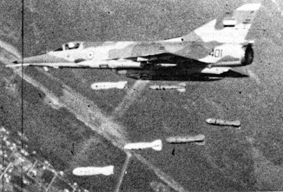
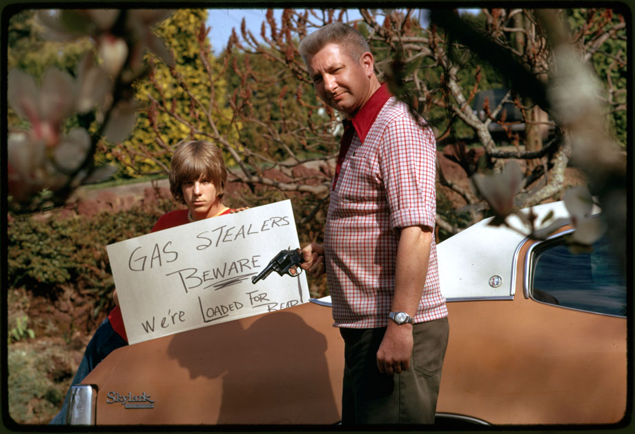

كذبة الجيش الذي لايقهر
بداية حرب وهي من رائي من اقوى الحروب في اخر مئة سنة حرب سببت في ازمة في النفط في جميع انحاء البلاد حرب سببت في اغتيال شخص الذي بدا فيها عزيزي القارىء من اهم المواضيع في فصلنا اليوم هو موضوع حرب اكتوبر .
حرب أكتوبر أو حرب العاشر من رمضان كما تعرف في مصر أو حرب تشرين التحريرية كما تعرف في سوريا أو حرب يوم الغفران (بالعبرية מלחמת יום כיפור، ميلخمت يوم كيبور) كما تعرف في إسرائيل هي حرب شنتها كل من مصر وسوريا في وقتٍ واحدٍ على إسرائيل عام 1973وهي رابع الحروب العربية الاسرائلية بعد حرب 1948 حرب فلسطين) وحرب1956 ( السويس) وحرب 1967 (حرب الستة أيام) بخلاف حرب الاستنزاف (1967-1970) التي لم تكن مواجهات عسكرية مباشرة ومستمرة بين الطرفين ولكن غارات وعمليات عسكرية متفرقة. وكانت إسرائيل في الحرب الثالثة (حرب 1967) قد احتلت شبة جزيرة سيناء في مصر وهضبة الجولان في سوريا، بالإضافة إلى الضفة الغربية التى كانت تحت الحكم الاردني وقطاع غزة آنذاك لحكم عسكري مصري. بدأت الحرب يوم السبت الموافق 6-10-1973 ميلادي كانو هجومين مفاجئين ومتزامنين على القوات الإسرائيلية؛ أحدهما للجيش المصري على جبهة سيناء المحتلة وآخر للجيش السوري على جبهة هضبه الجولان المحتلة وقد ساهمت في الحرب بعض الدول العربية سواء بالدعم العسكري أو الاقتصادي.

الحرب كانت كارثة كارثة على العالم العربي خصوصًا مصر ، مصر في تلك السنوات كانت بقيادة الرئيس الراحل جمال عبد الناصر والرئيس كان دائما يخاطب شعبه في اذاعة مسموعة عندما يريد ان يخاطب الناس يذهب ويتكلم في الراديو كما يشاء وكانت هذه الخطابات تصل الى جميع الدول العربية ،تلك الخطابات كانت كرسائل لشعبنا العربي لتحرير فلسطين ولهزيمة إسرائيل وكما قال سابقا (ونقول لهم يا ولاد ستين كلب) حيث كان يسمعه كل مواطن عربي في فترة الستينات متحمسين للحظة الحرب والانتصار العظيم
ولكن عندما جاءت الحرب حصل عكس ما كنا نأمل خسرت مصر في حرب 67 اكثر من 15 الف جندي وخسرت مئات الدبابات والاليات العسكرية وعندها في يوما واحدا خرج الرئيس في الاذاعه وقال بانه يتنحى ونهائيا من السلطة وكونه رئيسا ولكن الشعب المصري رفض هذه الاستقالة وخرج الجميع للشوارع وطلبوا منه ان يبقى رئيسًا لمصر وفعلا عبد الناصر يستجيب لطلب الشعب وقال "سابقى كما امرني الشعب " ومن هنا تحديدا تبدا الأحداث التي شهدتها الامة العربية .

بعد انتهاء الحرب بأشهر بدا يفكر جمال عبد الناصر ووصل لتحليل بانه سبب خسارته في الحرب …. هو صديقة ورفيق دربه نعم! عبد الحكيم عامر كان قائد الجيش المصري في حرب 67 وكان الرئيس مقتنع بان عبد الحكيم هو سبب ولهذا يستحق ان يقاله من منصبه وحكمه بالإقامة الجبرية في منزلة وبعدها باربعة اشهر انتشر خبر صادم في الجرائد وهو انتحار عبد الحكيم عامر هل انتحر حقا؟ ام انه قُتل؟ لا يوجد مصدر مؤكد ولكن لكل منا تحليله الخاص، بينما كان جمال عبد الناصر بناء جيشه المصري عندما كانت اسرائيل تفصل سيناء عن مصر عن طريق بناء خط يسمى خط بارليف،حاجز ترابي طوله 20 متر ما يعادل 7 طوابق معنى ان لا دبابة تستطيع ان تصل لهذا الطول في هذا الخط لدخوله او لاجتيازه وبالاضافة الحاجز كان …ملغم ! في ذالك الوقت كلف بناء الخط 500 مليون دولار ما يعني ان هذا المبلغ اليوم هو 3 مليار دولار هذا الرقم الهائل فقط لفصل سيناء عن مصر بداء الترويج لهذا الخط حيث عرف عند الجميع وتناقلت التساؤلات حول هذا الخط ولماذا لا يتم تدميره نوويًا ،بكل بساطة . حيث كانت فكرة انتحارية ولكن كان للجيش المصري خطة أخرى

في الثانية من ظهر يوم السادس من أكتوبر عام 1973، بدأ أكثر من ألفي مدفع ثقيل قصفه لمواقع العدو فى نفس اللحظة التى عبرت فيها سماء القناة 280 طائرة تشكل القوة الجوية المكلفة بالضربة الجوية الأولى التى أصابت مراكز القيادة والسيطرة الإسرائيلية بالشلل التام. وفى نفس الوقت كان آلاف المقاتلين بدأوا النزول إلى مياه القناة واعتلاء القوارب المطاطية والتحرك تحت لهيب النيران نحو الشاطئ الشرقى للقناة، بعد ذلك بدأت عمليات نصب الكباري بواسطة سلاح المهندسين ليعبر المصريون حاجز الهزيمة لتحقيق النصر المجيد.
فاجأ المصريون العالم بـ"معجزة" العبور واستطاع الجيش المصري عبور "خط بارليف"، ذلك الخط المنيع الذي وصف بأنه أقوى خط دفاعي في التاريخ ولا يمكن تدميره، إلا أن الجيش المصري رفض الهزيمة والرضوخ للأمر الواقع وصمم على استعادة أراضيه المحتلة والثأر لكرامته. وشكل العبور حدثا هائلا في تاريخ العسكرية المصرية والعربية لكونها أول هزيمة عسكرية لإسرائيل على أيدي العرب، وقضت مصر علي أسطورة الجيش الذي لا يقهر باقتحامها قناة السويس واجتياحها لكامل نقاط خط بارليف واستيلائها على الضفة الشرقية لقناة السويس بكل نقاطها وحصونها، وإدارتها بنجاح لقتال شرس فى عمق الضفة الشرقية وعلى الضفة الغربية لقناة السويس. وروجت إسرائيل طويلا لخط بارليف على أنه يستحيل عبوره وأنه يستطيع إبادة الجيش المصري إذا حاول عبور قناة السويس، مدعية أنه أقوى من خط "ماجينو" الذي بناه الفرنسيون بعد الحرب العالمية الأولى .. ولكن تمكن الجيش المصري من عبور قناة السويس واجتياح "خط بارليف" وأفقد العدو توازنه في أقل من ست ساعات. بدأ الهجوم بالضربة الجوية مستغلا عنصري المفاجأة والتمويه العسكريين الهائلين اللذين سبقا تلك الفترة، كما تم استغلال عناصر أخرى مثل المد والجزر واتجاه أشعة الشمس من اختراق الساتر الترابي في 81 موقعا مختلفا وإزالة 3 ملايين متر مكعب من التراب عن طريق استخدام مضخات مياه ذات الضغط العالي ومن ثم تم الاستيلاء على أغلب النقاط الحصينة للخط بخسائر محدودة ومن الـ441 عسكريا إسرائيليا تم قتل 126 وأسر 161، بينما لم تصمد إلا نقطة واحدة هي نقطة بودابست في أقصى الشمال في مواجهة بورسعيد.
بعد هذه الأحداث حاولت امريكا ان تتفاوض مع الرئيس جمال عبد الناصر بشان السلام الدولي وقال جمال عبد الناصر في ما معناه ان نحن نريد سيناء وبعدها لكل حادثًا حديث. وكان الرد …لن ننسحب. هنا فهم عبد الناصر بإن الارض لن ترجع بالحب او بالتراضي والتفاهم وانما بالحرب بدا الجيش يستعد وبدا الشعب يستعد وكان الحرب ستبدا عام 1970 حيث حصل شي غير متوقع في يوم 28 سبتمبر من نفس العام توفى الرئيس جمال عبدالناصر وكان سبب الوفاة نوبة قلبية
وكأنها كارثة طبيعية حصلت في مصر الملايين من الشعب المصري في الشوراع يعبرون عن حزنهم عن جمال عبد الناصر لأنهم كانو يرون بانه الامل الامل لاستعاده ارضهم المحتلة سيناء.
عندها خرج ضابط يمتلك تلك الملامح السودانية المصرية وقال بهذه العبارة "مرحبا ،انا الرئيس الجديد" وهو محمد انور السادات نائب الرئيس اصبح الرئيس رسميًا ،بعد استلام السادات السلطة بفترة صغيرة اتفقو المصرين والدول العربية بانه لا يشبه جمال عبد الناصر ابدا ولا اقصد الشكل بل اقصد بالطبع كان جمال عبد الناصر متكلم وكان معروفًا بخطاباته ويحمس الشعب ويعطي الأمل وكانه صوته كالصدى يبقى في الأذن اما انور السادات كان العكس تماما ،هادىء ودائما تائهة في راسه مع سيجارته في يده وتبدو عليه صفات … البسيط ولكن بعد تلاثة سنوات اتضح بانه ليس شخصا بسيط كما ذكرت لا بل انه ثعلب.

بعد اشهر من استلام السادات السلطة بدا في الاتصال مع إسرائيل وكان يعرض عليهم السلام بان ترجع الارض ولكن لاسرائيل رأى اخر إسرائيل رفضت تماما ،بمعنى نحن نؤيد القوة والحرب وهنا نتاكد بان الارض لا ترجع الا بالحرب فقط، هنا استوعب السادات بان يجب ان يتواصل مع سوريا للمساعده وللمحاربة مع بعضهم البعض وايضا كان حافظ الاسد جديدًا في منصب الرئاسة ويريد ان استرجاع الجولان المحتلة وايضا كان السادات جديد ويريد استرجاع سيناء المحتلة وهنا بدات الخطة كانت الخطة السورية تتضمن أستعادة كافة مرتفعات الجولان في 30 ساعة بحسب ما قدرت القيادة لسورية أن إسرائيل ستحتاج إلى ضعف هذا الوقت لكي تعبئ احتياطاتها ، وعلى أن ينجز ذلك مع نهاية يوم 7 اكتوبر قد يكون نهر الاردن هو نقطة النهاية للهجوم حيث سيتم إعادة تنظيم القوات واتخاذ اوضاع دفاعية استعدادا للهجمات الإسرائيلية المضادة. وقد تقرر لتنفيذ الخطة دفع 3 فرق مشاة سورية ضد خطوط الدفاع الإسرائيلية في الجولان لفتح ثغرة تندفع بها الفرقتين المدرعتين الأولى والثالثة.
بمعنى ان يفصلو قناة السويس ومن بعدها خط بارليف ويتحلون مسافة 12 كيلو متر داخل سيناء ومن بعدها يتوقفون من بعد هذه المسافة ويبدون من الهجوم إلى الدفاع وكانت الفكرة من 12 كيلو متر هو لان الصواريخ لا تتعدى اكثر من هذه المسافة ولانجاح هذه المهمة كانت مصر تمهيد للحرب والخطة كانت الخداع الاستراتيجي وكانت خطط هذه الخطة من السادات هي اخفاء كل دليل او حركة تُبين بدا استعداد حرب من مصر لاسرائيل من اشهر هذه الخطط تعليم الضباط اللغة النوبية وهي لهجة مستخدمة في جنوب مصر وشمال السودان وهي لغة قديمة ولا يستخدمها اغلب الناس بالتاكيد اسرائيل لديهم بعض الناس يفهمون اللغة العربية في أجهزة الإرسال ولكن بالتاكيد ليس لديهم من يفهم هذه اللغة
وكانت الخدعة الثانية هو موعد الحرب ، تم تحديد موعد الحرب وهو 6 اكتوبر 1973 كما ذكرت سابقا يسمى بعيد الغفران عند اليهود وكان يصادف 10 رمضان وباعتقادهم بان المصرين لن يدخلون الحرب في هذا الشهر ولكن حصل العكس. وفي يوم 6 اكتوبر الساعة 2 ظهرًا بداء الهجوم المصري ب220 طيارة حربية ضربت مواقع مهمة لاسرائيل في عمق سيناء وبعدها بدا القصف بالمدفعية وبعدها مباشرًا بدات فرق المشاة بعبور القناة … مهلا اليس هذا عجيبًا ؟ كيف لم تنتبه اسرائيل لعبورهم القناة؟
قبل 24 ساعة من الحرب دخلت قوات من الجيش المصري تسمى بالضفادع البشرية وسدت فتحات الأنابيب المبال وهكذا استطاع الجيش ان يعبر القناة بدون مشاكل وبعدها باختراق خط بارليف الاختراق لم يكن بقنبله نووية او ما شابه بل كان بمضخات المياة استطاعو صنع شق عن طريق الضغظ العالي من المياة وفعلا استطاع الجيش المصري ان يجتاز خط بارليف بنجاح ويدخل سيناء وبهذه الاثناء كان يتقدم الجيش السوري 60 الف جندي ضد الجيش الاسرائيلي الذي كان 400 جندي فقط في الجولان، بسبب هذا الفرق الكبير استطاعت سوريا استرجاع نص الجولان في اقل من يوم وبعد 3 ايام استوعبت اسرائيل بانها خسرت الحرب لا محالة ، في الجنوب ضد الجيش المصري وفي الشمال ضد الجيش السوري ولكن بدا الهجوم اكثر على الجيش السوري حيث كان متورط بكثرة الهجوم وفي اليد الاخرى كان الجيش المصري سعيدا بتقدمهم
وهنا كان الخلاف بين سعد الدين الشاذلي المدبر لخطة الحرب وانور السادات فريق الشاذلي كان يرى بانه لايوجد داعي للتقدم فهم قطعو 12 متر في سيناء واذا قامو بالتقدم اكثر فهذه تعتبر مخاطرة وهذا الكلام الذي كان يحاول الشاذلي ان يقنع انوار السادات ولكن قال له السادات “لا” ونحن سنتقدم وبما ان السادات هو الرئيس يصبح كلامة صحيح . وهنا حصلت الكارثة ،دخلت القوات المصرية في عمق سيناء وخلال دقائق تم تدمير حوالي 260 دبابة مصرية وقتل اكثر من 5 الاف جندي مصري ومع ذالك الهجوم على الجبهة السورية لم يخف ابدا بالعكس كان يزيد شيئا فشيئا الى ان وصلت لمرحلة ان اسرائيل بدات تفكر بانها تحتل مناطق اخرى غير الجولان بل باختلال العاصمة السورية دمشق وهنا تدخل الجيش الاردني تحديدا يوم 14 اكتوبر وفي هذا اليوم تحرك لواء من الجيش الاردني لحماية ردعاه والعاصمة دمشق وقامت الحرب بين الجيش الاردني والجيش الاسرائيلي في مدينة تل المصحراه تم خلالها تدمير اكثر من 10 دبابات إسرائيلية والنتيجة كانت تراجع الاسرائلين وحماية العاصمة دمشق .
وفي يوم 17 اكتوبر قرر الشعب العربي استخدام اقواء سلاح لديهم وهو سلاح البترول ،كانت السعودية وبعض الدول الخليجية بحظر تصدير النفط للدول الداعمة لاسرائيل من اولهم امريكيا وهولندا وليس هذا فقط بل زادو في ارتفاع الاسعار في النفط وشخصيا انا أرى بانها حركة ايجابية في تاريخ الدول الخليجية ،وهذا الموضوع الذي سبب كارثة عالمية عند الامريكيون وهذا الموضوع تحديدا جعل الدول تتدخل لايقاف هذه الحرب وفعلا في تاريخ 28 اكتوبر يتم ايقاف النار بين العرب واسرائيل والنتيجة لم تكن واضحة اعني كان من الواضح انتصار مصر في الحرب وحتى اذا رجع جزء من سيناء … ومن بعدها بدأت المفاوضات في وقت مناسب وهنا الصدمة لدى البعض حيث في عام 1977 زار السادات الاراضي المحتلة والقى خطابة في الكينيست وهو البرلمان الاسرائيلي والتقى بكبار المسؤليين هناك مثل غولدا مائير ،موشياه ديان ومناح ميغين.
وبعدها بعامين وقع السادات على معاهدة السلام بينه وبين إسرائيل. الشعب المصري والعرب لم يصدقو هدا الخبر وبرر السادات بانه وقع لان يريد استعادة ما تبقى من سيناء الى ان الشعب المصري لم يكن راضيا على هذه الخطوة وبعد هذه المعاهدة بسنتين في تاريخ 6 اكتوبر 1981 وبينما كان السادات يتمتع في ذكرى انتصار الجيش في 6 اكتوبر ثم اغتياله من قبل جماعة في الجيش المصري ليتأثر السادات بسته طلقات اخترقت صدره وتنتهى قصة حرب من اهم واعظم الحروب في التاريخ الحديث والحرب التي انتصر فيها العرب ربما ليس بالشكل الكامل ولكن يوميا ما سننتصر.
ومن هنا يمكننا رؤية الاحداث الغير انسانية والاحداث التى تبقى في الذهن ولا يمكننا تخطيها بسبب عدم انسانية الاحتلال الصهيوني الضالم شخصيًا ، أرى ابنائنا وبناتنا أبطال هذه المقاومة وهم عند الله شهداء وعندنا نحن أبطال شرفاء.
بالطبع هنالك بعض الدول التى اعترفت باسرائيل بانها دولة قديمة عريقة ولها تاريخ سياسي ومن ابرز هذه الدول هي امريكا ، نعم امريكا ليست بمفاجأة صحيح؟ ولكنها الحقيقة. امريكا ترى اسرائيل كالصديق المفضل ولكن مفضلًا في المصالح المشتركة فقط
كانت الولايات المتحدة أول دولة تعترف بإسرائيل كدولة مستقلة في 14 مايو 1948 عندما أصدر الرئيس هاري ترومان بيان اعتراف عقب إعلان إسرائيل الاستقلال في نفس التاريخ. تم تأسيس العلاقات الدبلوماسية عندما قدم السفير الأمريكي جيمس غروفر ماكدونالد أوراق اعتماده في 28 مارس 1949. ومنذ ذلك الحين، أصبحت اسرائيل ، ولا تزال، أهم شريك لأمريكا في الشرق الأوسط. ترتبط الدولتان ارتباطًا وثيقًا بالعلاقات التاريخية والثقافية بالإضافة إلى المصالح المشتركة. نستيطع ان نرى بأن امريكا الداعم الاول لاسرائيل من جميع نواحي الدعم المالي والاعلامي.